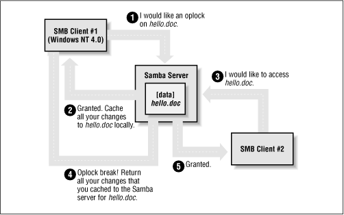

Using Samba
Robert Eckstein, David Collier-Brown, Peter Kelly1st Edition November 1999
1-56592-449-5, Order Number: 4495
416 pages, $34.95
|
|
Using SambaRobert Eckstein, David Collier-Brown, Peter Kelly1st Edition November 1999 1-56592-449-5, Order Number: 4495 416 pages, $34.95 |
5.5 Locks and Oplocks
Concurrent writes to a single file are not desirable in any operating system. To prevent this, most operating systems use locks to guarantee that only one process can write to a file at a time. Operating systems traditionally lock entire files, although newer ones allow a range of bytes within a file to be locked. If another process attempts to write to a file (or section of one) that is already locked, it will receive an error from the operating system and will wait until the lock is released.
Samba supports the standard DOS and NT filesystem (deny-mode) locking requests, which allow only one process to write to an entire file on a server at a give time, as well as byte-range locking. In addition, Samba supports a new locking mechanism known in the Windows NT world as opportunistic locking - oplock for short.
5.5.1 Opportunistic Locking
Opportunistic locking allows a client to notify the Samba server that it will not only be the exclusive writer of a file, but will also cache its changes to that file on its own machine (and not on the Samba server) in order to speed up file access for that client. When Samba knows that a file has been opportunistically locked by a client, it marks its version as having an opportunistic lock and waits for the client to complete work on the file, at which point it expects the client to send the final changes back to the Samba server for synchronization.
If a second client requests access to that file before the first client has finished working on it, Samba can send an oplock break request to the first client. This tells the client to stop caching its changes and return the current state of the file to the server so that the interrupting client can use it as it sees fit. An opportunistic lock, however, is not a replacement for a standard deny-mode lock. It is not unheard of for the interrupting process to be granted an oplock break only to discover that the original process also has a deny-mode lock on a file as well. Figure 5.8 illustrates this opportunistic locking process.
Figure 5.8: Opportunistic locking
In terms of locks, we highly recommend using the defaults provided by Samba: standard DOS/Windows deny-mode locks for compatibility and oplocks for the extra performance that local caching allows. If your operating system can take advantage of oplocks, it should provide significant performance improvements. Unless you have a specific reason for changing any of these options, it's best to leave them as they are.
5.5.2 Unix and Locking
Windows systems cooperate well to avoid overwriting each other's changes. But if a file stored on a Samba system is accessed by a Unix process, this process won't know a thing about Windows oplocks and could easily ride roughshod over a lock. Some Unix systems have been enhanced to understand the Windows oplocks maintained by Samba. Currently the support exists only in SGI Irix 6.5.2f and later; Linux and FreeBSD should soon follow.
If you have a system that understands oplocks, set
kerneloplocks=yesin the Samba configuration file. That should eliminate conflicts between Unix processes and Windows users.If your system does not support kernel oplocks, you could end up with corrupted data when somebody runs a Unix process that reads or writes a file that Windows users also access. However, Samba provides a rough protection mechanism in the absence of kernel oplocks: the
vetooplockfilesoption. If you can anticipate which Samba files are used by both Windows users and Unix users, set their names in avetooplockfilesoption. This will suppress the use of oplocks on matching filenames, which will supress client caching, and let the Windows and Unix programs use system locking or update times to detect competition for the same file. A sample option is:veto oplock files = /*.dbm/This option allows both Unix processes and Windows users to edit files ending in the suffix .dbm. Note that the syntax of this option is similar to
vetofiles.Samba's options for locks and oplocks are given in Table 5.8.
Table 5.8: Locks and Oplocks Configuration Options Option
Parameters
Function
Default
Scope
share modesboolean
If set to
yes, turns on support for DOS-style whole-file locks.
yesShare
lockingboolean
If
yes, turns on byte-range locks.
yesShare
strict lockingboolean
If
yes, denies access to an entire file if a byte-range lock exists in it.
noShare
oplocksboolean
If
yes, turn on local caching of files on the client for this share.
yesShare
kernel oplocksboolean
If
yes, indicates that the kernel supports oplocks.
yesGlobal
fake oplocksboolean
If
yes, tells client the lock was obtained, but doesn't actually lock it.
noShare
blocking locksboolean
Allows lock requestor to wait for the lock to be granted.
yesShare
veto oplock filesstring (list of filenames)
Does not oplock specified files.
None
Share
lock directorystring (fully-qualified pathname)
Sets the location where various Samba files, including locks, are stored.
As specified in Samba makefile
Global
5.5.2.1 share modes
The most primitive locks available to Samba are deny-mode locks, known as share modes, which are employed by programs such as text editors to avoid accidental overwriting of files. For reference, the deny-mode locks are listed in Table 5.9.
Table 5.9: SMB Deny-Mode Locks Lock
Description
DENY_NONEDo not deny any other file requests.
DENY_ALLDeny all open requests on the current file.
DENY_READDeny any read-only open requests on the current file.
DENY_WRITEDeny any write-only open requests on the current file.
DENY_DOSIf opened for reading, others can read but cannot write to the file. If opened for writing, others cannot open the file at all.
DENY_FCBObsolete.
The
sharemodesparameter, which enforces the use of these locks, is enabled by default. To disable it, use the following command:[accounting] share modes = noWe highly recommend against disabling the default locking mechanism unless you have a justifiable reason for doing so. Most Windows and DOS applications rely on these locking mechanisms in order to work correctly, and will complain bitterly if this functionality is taken away.
5.5.2.2 locking
The
lockingoption can be used to tell Samba to engage or disengage server-side byte-range locks on behalf of the client. Samba implements byte-range locks on the server side with normal Unix advisory locks and will consequently prevent other properly-behaved Unix processes from overwriting a locked byte range.This option can be specified per share as follows:
[accounting] locking = yesIf the
lockingoption is set toyes, the requestor will be delayed until the holder of either type of lock releases it (or crashes). If, however, the option is set tono, no byte-range locks will be kept for the files, although requests to lock and unlock files will appear to succeed. The option is set toyesby default; however, you can turn this option off if you have read-only media.5.5.2.3 strict locking
This option checks every file access for a byte-range lock on the range of bytes being accessed. This is typically not needed if a client adheres to all the locking mechanisms in place. This option is set to
noby default; however, you can reset it per share as follows:[accounting] strict locking = yesIf this option is set to
yes, mandatory locks are enforced on any file with byte-range locks.5.5.2.4 blocking locks
Samba also supports blocking locks, a minor variant of range locks. Here, if the range of bytes is not available, the client specifies an amount of time that it's willing to wait. The server then caches the lock request, periodically checking to see if the file is available. If it is, it notifies the client; however, if time expires, Samba will tell the client that the request has failed. This strategy prevents the client from continually polling to see if the lock is available.
You can disable this option per share as follows:
[accounting] blocking locks = noWhen set to
yes, blocking locks will be enforced on the file. If this option is set tono, Samba behaves as if normal locking mechanisms are in place on the file. The default isyes.5.5.2.5 oplocks
This option enables or disables support for oplocks on the client. The option is enabled by default. However, you can disable it with the following command:
[data] oplocks = noIf you are in an extremely unstable network environment or have many clients that cannot take advantage of opportunistic locking, it may be better to shut this Samba feature off. Oplocks should be disabled if you are accessing the same files from both Unix applications (such as vi) and SMB clients (unless you are lucky enough to have an operating system that supports kernel oplocks as discussed earlier).
5.5.2.6 fake oplocks
Before opportunistic locking was available on Samba, the Samba daemons pretended to allow oplocks via the
fakeoplocksoption. If this option was enabled, all clients were told that the file is available for opportunistic locking, and never warned of simultaneous access. This option is deprecated now that real oplocks are available on Samba.5.5.2.7 kernel oplocks
If a Unix application separate from Samba tries to update a file that Samba has oplocked to a Windows client, it will likely succeed (depending on the operating system) and both Samba and the client will never be aware of it. However, if the local Unix operating system supports it, Samba can warn it of oplocked files, which can suspend the Unix process, notify the client via Samba to write its copy back, and only then allow the open to complete. Essentially, this means that the operating system kernel on the Samba system has the ability to handle oplocks as well as Samba.
You can enable this behavior with the
kerneloplocksoption, as follows:[global] kernel oplocks = yesSamba can automatically detect kernel oplocks and use them if present. At the time of this writing, this feature is supported only by SGI Irix 6.5.2f and later. However, Linux and FreeBSD support are expected in the near future. A system without kernel oplocks will allow the Unix process to update the file, but the client programs will notice the change only at a later time, if at all.
5.5.2.8 veto oplock files
You can provide a list of filenames that are never granted opportunistic locks with the
vetooplockfilesoption. This option can be set either globally or on a per-share basis. For example:veto oplock files = /*.bat/*.htm/The value of this option is a series of patterns. Each pattern entry must begin, end, or be separated from another with a slash (/) character, even if there is only one pattern listed. Asterisks can be used as a wildcard to represent zero or more characters. Questions marks can be used to represent exactly one character.
We recommend that you disable oplocks on any files that are meant to be updated by Unix or are intended to be shared by several processes simultaneously.
5.5.2.9 lock directory
This option (sometimes called
lockdir) specifies the location of a directory where Samba will store SMB deny-mode lock files. Samba stores other files in this directory as well, such as browse lists and its shared memory file. If WINS is enabled, the WINS database is written to this directory as well. The default for this option is specified in the Samba makefile; it is typically /usr/local/samba/var/locks. You can override this location as follows:[global] lock directory = /usr/local/samba/locksYou typically would not need to override this option, unless you want to move the lock files to a more standardized location, such as /var/spool/locks.
 |
 |
 |
| 5.4 Name Mangling and Case |
 | 6. Users, Security, and Domains |
© 1999, O'Reilly & Associates, Inc.